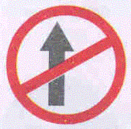

తెల్లటి స్టాప్ లైన్ దాటకుండా ఆగాలి
తెల్లటి స్టాప్ లైన్ దాటకుండా ఆగాలి
తెలంగాణ RTA లెర్నర్స్ లైసెన్స్ (LLR) తెలుగు ప్రాక్టీస్ & మాక్ టెస్ట్
హైదరాబాద్ మరియు తెలంగాణ RTA లెర్నర్స్ లైసెన్స్ (LLR) కంప్యూటర్ పరీక్ష (STALL) కోసం 412 అధికారిక ప్రశ్నలతో తెలుగులో ఉచిత మాక్ టెస్ట్, రోడ్డు సంకేతాలు మరియు RTO గైడ్.
⚡ పరీక్షకు ముందు 10 ముఖ్య నియమాలు (Golden Rules)
- పాస్ మార్కు 20కి 12 (60%). 12 సరైన సమాధానాలు రాగానే పరీక్ష పాస్ అయిపోతారు!
- సర్కిల్ = తప్పనిసరి ఆర్డర్లు (ఎరుపు సరిహద్దు = వద్దు, నీలం = తప్పక చేయాలి). త్రిభుజం = హెచ్చరికలు. దీర్ఘచతురస్రం = సమాచారం.
- పాదచారులకు జీబ్రా క్రాసింగ్ వద్ద ఎల్లప్పుడూ మొదటి ప్రాధాన్యత (Right of Way) ఉంటుంది.
- ఓవర్టేకింగ్ ఎల్లప్పుడూ కుడి వైపు నుంచే చేయాలి. ముందు వాహనం కుడి వైపు తిరిగే సంకేతం ఇచ్చి రోడ్డు మధ్యలోకి వస్తేనే ఎడమ నుండి ఓవర్టేక్ చేయవచ్చు.
- కొండ ప్రాంతాల్లో పైకి ఎక్కే వాహనాలకు మొదటి ప్రాధాన్యత ఇవ్వాలి (కిందికి దిగే వాహనాలు ఆగాలి).
- అత్యవసర ఫోన్ నంబర్లు: పోలీస్ = 100, అంబులెన్స్ = 108, ఫైర్ = 101.
- లెర్నర్స్ లైసెన్స్ (LLR) కాలపరిమితి 6 నెలలు (180 రోజులు). 30 రోజుల తర్వాత శాశ్వత డ్రైవింగ్ లైసెన్స్ కోసం దరఖాస్తు చేసుకోవచ్చు.
- చేతిలో తెల్లటి కర్ర పట్టుకుని రోడ్డు దాటే వ్యక్తి అంధుడు (Blind) అని అర్థం.
- రోడ్డుపై నిరంతర పసుపు/తెల్లటి గీత ఉంటే ఎట్టి పరిస్థితుల్లోనూ ఓవర్టేక్ లేదా యూ-టర్న్ చేయకూడదు.
- పసుపు (ఆంబర్) లైట్: స్టాప్ లైన్ వద్ద ఆగడానికి సిద్ధం కావాలి. అప్పటికే లైన్ దాటి ఉంటేనే సురక్షితంగా వెళ్లాలి.
🚸 ముఖ్యమైన రోడ్డు సంకేతాలు (నమూనా)
తెల్లటి స్టాప్ లైన్ దాటకుండా ఆగాలి
 నెమ్మదిగా చేసి జాగ్రత్తగా ముందుకు సాగాలి
నెమ్మదిగా చేసి జాగ్రత్తగా ముందుకు సాగాలి
 ఆగి, ట్రాఫిక్ను గమనించి జాగ్రత్తగా వెళ్లాలి
ఆగి, ట్రాఫిక్ను గమనించి జాగ్రత్తగా వెళ్లాలి
 తప్పనిసరి సంకేతాలు (Mandatory)
తప్పనిసరి సంకేతాలు (Mandatory)
 హెచ్చరిక సంకేతాలు (Cautionary)
హెచ్చరిక సంకేతాలు (Cautionary)
 సమాచార సంకేతాలు (Informatory)
సమాచార సంకేతాలు (Informatory)
 ఆగండి (STOP)
ఆగండి (STOP)
 దారి ఇవ్వండి (GIVE WAY)
దారి ఇవ్వండి (GIVE WAY)
 BLOW YOUR హారన్ AND డ్రైవ్ చేయండి CONTINUE TO THE END OF THE రోడ్డు
BLOW YOUR హారన్ AND డ్రైవ్ చేయండి CONTINUE TO THE END OF THE రోడ్డు
 వన్ వే (ఏకముఖ మార్గం)
వన్ వే (ఏకముఖ మార్గం)

ప్రవేశం లేదు (NO ENTRY) వాహనం నిషిద్ధం IN BOTH DIRECTION
వాహనం నిషిద్ధం IN BOTH DIRECTION
🏢 హైదరాబాద్ RTO పరీక్షా కేంద్రాలు
RTO సెంట్రల్ (ఖైరతాబాద్)
ఈనాడు ఆఫీస్ ఎదురుగా, సోమాజిగూడ, ఖైరతాబాద్, హైదరాబాద్ - 500082
RTO నార్త్ (సికింద్రాబాద్ / తిరుమలగిరి)
తిరుమలగిరి క్రాస్ రోడ్స్ సమీపంలో, లాల్ బజార్, సికింద్రాబాద్ - 500015
RTO రంగారెడ్డి / సైబరాబాద్ (కొండాపూర్)
బొటానికల్ గార్డెన్ సమీపంలో, డ్రైవింగ్ ట్రాక్ ఎదురుగా, కొండాపూర్, హైదరాబాద్ - 500084
RTO ఈస్ట్ / మేడ్చల్ (ఉప్పల్)
సర్వే ఆఫ్ ఇండియా సమీపంలో, ఇన్నర్ రింగ్ రోడ్డు, ఉప్పల్, హైదరాబాద్ - 500039
RTO వెస్ట్ (టోలిచౌకి / మెహదీపట్నం)
రెతిబౌలి క్రాస్ రోడ్స్, మెహదీపట్నం, హైదరాబాద్ - 500028
RTO ఈస్ట్ (మలక్పేట్)
ఓల్డ్ మలక్పేట్, టీవీ టవర్ సమీపంలో, మూసారాంబాగ్, హైదరాబాద్ - 500036
FAQ
తెలంగాణ LLR కంప్యూటర్ పరీక్షలో ఎన్ని ప్రశ్నలు ఉంటాయి?
మొత్తం 20 మల్టిపుల్ ఛాయిస్ ప్రశ్నలు ఉంటాయి: 8 రోడ్డు సంకేతాలు, 8 ట్రాఫిక్ నియమాలు, 4 జనరల్ డ్రైవింగ్ నియమాలు.
తెలంగాణ LLR పరీక్షలో పాస్ మార్కు ఎంత?
20 ప్రశ్నలకు కనీసం 12 సరైన సమాధానాలు (60%) రావాలి. నెగటివ్ మార్కింగ్ లేదు.
ఒక్కో ప్రశ్నకు ఎంత సమయం ఉంటుంది?
ప్రతి ప్రశ్నకు 30 సెకన్ల సమయం ఉంటుంది. 12 సరైన సమాధానాలు రాగానే పరీక్ష వెంటనే పాస్ అని ముగుస్తుంది.